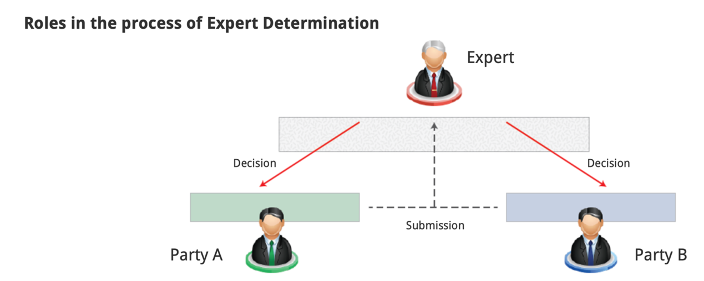

Expert determination
Questions: Select the answer you consider to be correct and then to check your response at the end of this chapter.
Q1:What is arguably the crucial distinction between expert and judicial/quasi-judicial determination? 专家裁决和司法/准司法裁决之间的关键区别是什么？
A.Expert determination is more expensive.专家裁决更贵
B.In expert determination, the decision is not binding.在专家裁决中，决定没有约束力
C.In expert determination, the scope of the dispute is limited to questions of fact.在专家裁决中，争议的范围限制于事实问题
D.None of these.以上都不是
A1: The correct answer is C
It can be argued that the crucial distinction between expert and judicial/quasi-judicial determination lies in the fact that the scope of the dispute is limited to questions of fact and does not extend to questions of law or involve mixed questions of law and fact. Thus, once the question of fact is determined, the expert’s role ends immediately. However, it can be further argued that experts may well determine issues of law and fact. (可以这样认为，专家和司法/准司法裁决之间的关键区别在于，争议的范围限于事实问题，而不扩张到法律问题，也不涉及法律和事实的混合问题。因此，一旦事实问题被裁定，专家的作用立即结束。然而，可以进一步认为，专家可以很好地确定法律和事实问题。)
Q2:What of the following is most likely to be decided by Expert Determination? 下列哪项最有可能由专家裁决决定？
A. A dispute involving a high level of animosity between the parties. 涉及当事人之间高度敌意的争端
B. A dispute of a highly technical nature 技术性很强的争论
C. A dispute between a business and a consumer 企业和消费者之间的纠纷
D. A complex legal dispute 复杂的法律纠纷
A2:The correct answer is B （正确答案：B）
Expert determination is used primarily in disputes of a “technical nature” which require an “opinion” on a specific issue or issues. Expert determination can often be used in cases where it would be much more efficient to address these issues before experts in the field than in a legal battle in front of judges or arbitrators. (专家裁决主要用于“技术性”争端，需要对一个或多个具体问题发表“意见”。在一些案件中，在一些案件中，如果在专家面前解决这些问题比在法官或仲裁员面前进行法律斗争要有效率得多，通常可以使用专家裁决。)
Q3:How is the appointment of an expert decided? 专家的任命是如何被决定的？
A. By appointment by the court. 被法院任命
B. By appointment by the parties. 被当事人任命
C. By appointment by an independent statutory body. 由独立法定机构委任
D. None of these. 以上都不是
The correct answer is B （正确答案：B）
The appointment of an expert is generally in the hands of the parties, and it is up to them to ensure a suitable expert is appointed. It is a matter of private contract between the parties, and the criterion for determining the suitability of an expert to decide issues depends on the wording of the contract and discussion between the parties. (专家的任命通常掌握在当事人手上，并由他们确保任命合适的专家。这是当事人之间的私人合同问题，确定专家是否适合决定问题的标准取决于合同的措辞和当事人之间的讨论。)
Congratulations!
You have completed our overview about the Expert Determination mechanism. （你已完成了我们对专家裁决机制的概述） We have looked at the following key areas: （我们研究了以下主要领域）
• ED is a process whereby two parties agree to submit an issue for the determination of a third party. （专家裁决是指双方同意将一个问题提交给第三方裁定的程序）
• It is used primarily in disputes of a “technical” nature which require an “opinion” on a specific issue or issues. （它主要用于“技术”性质的争议，需要对一个或多个特定问题发表“意见”）
• The scope of the dispute is limited to questions of fact and does not extend to questions of law or involve mixed questions of law and fact. （争议的范围限于事实问题，不涉及法律问题，也不涉及法律与事实的混合问题）
• The appointment of an expert is generally in the hands of the parties, and it is up to them to ensure a suitable expert is appointed. （专家的任命通常掌握在各方手中，并由他们确保任命合适的专家）
What is the aim of this module?
To help you understand how Expert Determination works and what are the outcomes of this mechanism. 了解专家裁决是如何工作的，以及这种机制的结果是什么。
Note: Expert Determination is a radically different role to Expert Witness in dispute resolution proceedings. 在争议解决程序中，专家裁决与专家证人是完全不同的角色。Expert Witness专家证人：具有专家资格，并被允许帮助陪审团或者法庭理解某些普通人难以理解的复杂的专业性的问题。
Using experts to determine the outcome in a dispute has a lengthy history. Traditionally, the role of an expert is that of assessment, valuation, and certification. 利用专家来决定争端的结果已经有很长的历史了。传统上，一个专家的作用是评估，评价和认证。 For example, an expert may be asked: (例如，可能会问专家：)
(1)to value a house or a block of flats （给一栋房子或一栋公寓估价）
(2)to assess the price of shares in a private company or a professional partnership （评估私人公司或专业合伙企业的股票价格）
to certify the sum payable for work done by a building or engineering contractor. （认证建筑或工程承包商所完成的工作的应付款项）
However, the work of the expert extends beyond this traditional role into that of a ‘decision-maker’，not just bringing expert evidence and opinion to a dispute, but going further and providing a determination of the dispute. （然而，专家的工作超越了这一传统角色，成为“决策者”，不仅为争议提供专家证据和意见，并且更进一步，提供争议的裁决。）
Expert determination 专家裁决
Expert determination is a historically accepted form of dispute resolution invoked when there is not a formulated dispute in which the parties have defined positions that need to be subjected to arbitration, but rather both parties are in agreement that there is a need for an evaluation. 专家裁决是一种历史上公认的争议解决形式，当双方没有明确的立场需要进行仲裁，而是双方都同意有必要进行评估时，就会调用专家裁决。
Expert Determination (ED) is a process whereby two parties agree to submit an issue to a third party for determination. It is mainly used in disputes which revolve around a technical area which require an expert to give an opinion on a specific issue or issues. 专家裁决（ED）是双方同意将问题提交给第三方进行裁决的过程。它主要用于围绕技术领域的争议，需要专家就一个或多个特定问题发表意见。
Expert in his field专家在他的领域
It can be expensive and time-consuming to bring technical disputes to court, and so ED can often bring disputes to a close much more efficiently. The expert could be a lawyer, accountant or person from another appropriate professional discipline who is required to resolve the dispute. 将技术纠纷诉诸法庭既昂贵又耗时，因此专家裁决可以更有效地解决纠纷。专家可以是律师，会计或其他需要解决争议的适当专业领域的人员。
Final decision 最终决定
The parties agree that the decision of the expert is to be final and binding. 双方同意专家的决定是最终的并具有约束力。
One of the defining aspects of ED is that the scope of the dispute is limited to questions of fact and does not extend to questions of law or involve mixed questions of law and fact. 专家裁决的一个决定性方面是，争议的范围限于事实问题，而不扩展到法律问题，也不涉及法律和事实的混合问题。
Thus once the question of fact is determined, the expert’s role ends immediately. However, it is sometimes the case that experts may well determine issues of law and fact. 因此，一旦事实问题确定了，专家的角色就立即结束了。然而，有时专家可以很好地确定法律和事实问题。
Expert determination 专家裁决
As with other third parties involved in ADR, experts must act with impartiality, must have no vested interest in the outcome of the dispute and must not be biased in any way towards or against either party. If the expert becomes aware of any circumstance which might reasonably be considered to affect his ability to act impartially and disinterestedly, he must inform the parties’ immediately. 与参与ADR的其他第三方一样，专家必须公正行事，在争议结果中不得有既得利益，不得以任何方式偏袒或反对任何一方。如果专家意识到可能被合理地认为会影响其公正和无私行事的能力的任何情况，他必须立即通知当事各方。
Appointment of an expert专家的任命
The appointment of an expert is generally in the hands of the parties, and it is up to them to ensure a suitable expert is appointed. It is a matter of private contract between the parties, and the criterion for determining the suitability of an expert to decide issues depends on the wording of the contract and discussions between the parties. 专家的任命通常掌握在各方手中，并由他们确保任命合适的专家。这是当事人之间的私人合同问题，确定专家是否适合裁决问题的标准取决于合同的措辞和当事人之间的讨论。
Legislative framework法律框架
Expert determination is not subject to a legislative framework, and the authority of the independent expert is dependent on the parties. The expert can consider any information which he decides is relevant to the determination of the issue since the rules of law on admissibility of evidence do not apply. 专家的决定不接受法律框架的约束，独立专家的权威取决于当事人。专家可以考虑他认为与确定问题有关的任何资料，因为关于证据可接受性的法律规则不适用。
Expert Determination is a form of alternative dispute resolution in which an independent expert in the subject of the dispute is appointed by the parties to decide on their issue based on his technical expertise. （专家裁决是一种替代性争议解决方式，由当事人任命一名独立的争议主题专家，根据其技术专长对争议问题作出裁决。）
The parties will provide the expert with the necessary evidence and documents that will help him in taking a decision, although he might consider it appropriate to request further clarifications. This process is entirely confidential and is controlled by the parties, not court or arbitration rules. （当事人将会向专家提供可帮助他作出决定的重要证据和文件，虽然他可能考虑适当要求进一步的澄清。这个过程是完全保密的，并由双方控制，而不是法院或仲裁规则。）